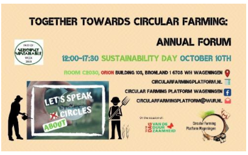
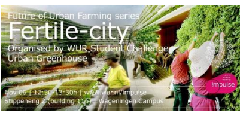
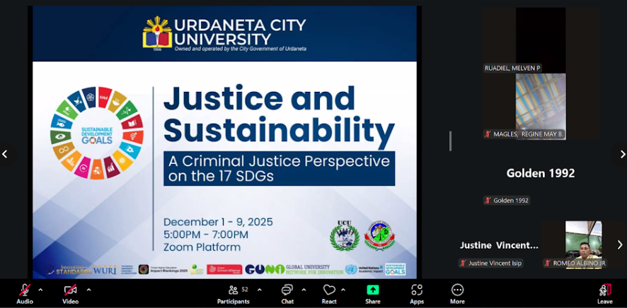

| Examples of Events Related to Sustainability | |
|---|---|
| Wageningen University & Research, Netherlands | |
|
 |
 |
| University College Cork, Ireland | |
|
 |
|
Example of events related to environment and sustainability hosted or organized by the university in the academic year 2022-2024.
Total number of sustainability/environment related events in:
A total average per annum over the last 3 years of 123 events (e.g. conferences, workshops, awareness raising, practical training, etc.).